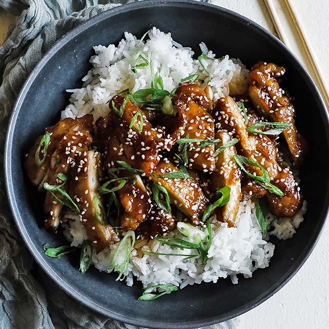

Chicken Terriyaki

Description
This sweet and tangy chicken-Terriyaki bowl is my go-to meal on a busy workday, because it is delicious and very easy to make.
Ingredients
- Chicken Thighs
- 1 block of Butter
- 3 tbs of Soy Sauce
- 1 tbs of Honey
- 1 stalk of scallion finely chopped
- some seasame seeds for garnish
- Cooked rice
- Salt and pepper
Steps
- Cut Chicken Thighs into half inch strips
- Season strips with salt and pepper
- Heat butter in a pan and place Chicken Thighs until fully cooked
- In a bowl combine honey, soy sauce and a splash of water, mix
- Pour sauce into pan and reduce the sauce until it thickens
- Sprinkle scallion and seasame seeds and enjoy!
Back Home